2. Akka 分片集群水平扩展能力分析¶
跟很多分片集群解决方案不同，akka 分片集群（sharding cluster）中每一个节点都在直接访问本地数据的同时，也都可以作为 proxy 访问集群中其它节点的数据。在我看来，这是 akka 分片集群水平扩展（scale-out）能力可能接近线性的关键。
2.1. 测试¶
在采用树莓派 2 组成的 10 个节点的集群中，我用 astore 测试了 akka 分片的水平扩展能力，结果显示出非常好的线性。我们不妨在此做个简单的分析。
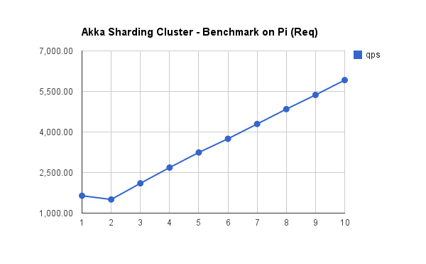 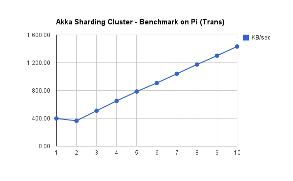2.2. 估算¶
设 c 为连接数， 为平均响应时间，则单节点时 qps 为：

当节点数为 n 时，数据有 的概率在本节点，而 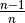 的概率在其它节点。假设在本节点的平均响应时间仍然为 ，在其它节点的则为 ，则总体的平均响应时间为：
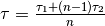
这时，qps 为：
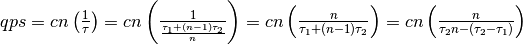
当 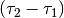 随着 n 的增加而越来越小于 时，我们可以开始忽略 项，也即：
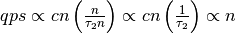
2.3. 验证¶
下面我们看看几个测试中实际的数据：
连接数
单节点时，平均响应时间 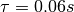，则：

多节点情况下，假设 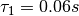 不变，根据测试数据可以估算出 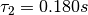 左右，则：
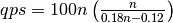
从这个公式可以看出，当 n 逐渐增大时， 中的 比重很快上升，当 n = 7 时， ，已经是 0.12 的 10 倍，
，已经是 0.12 的 10 倍，
那么这个公式是否真的有效呢？我计算了 n 从 2 到 10 的数据，跟实测数据很接近：
| n | 估算 | 实测 |
|---|---|---|
| 1 | 1667 | 1643 |
| 2 | 1667 | 1505 |
| 3 | 2143 | 2102 |
| 4 | 2667 | 2685 |
| 5 | 3205 | 3243 |
| 6 | 3750 | 3749 |
| 7 | 4298 | 4297 |
| 8 | 4848 | 4846 |
| 9 | 5400 | 5370 |
| 10 | 5952 | 5920 |